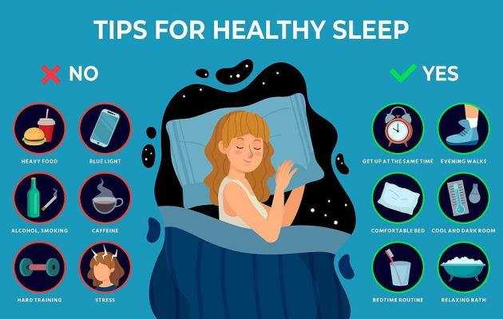

Sleep Cycle Optimization
Learn about the importance of sleep cycles and how to optimize your sleep for better health and well-being.
Some tips for improving your sleep:
- Stick to a consistent sleep schedule, even on weekends.
- Create a relaxing bedtime routine to signal to your body that it's time to wind down.
- Avoid screens (phones, computers, TVs) at least an hour before bedtime to reduce exposure to blue light.
- Keep your bedroom cool, dark, and quiet to create an optimal sleep environment.
- Avoid caffeine and heavy meals close to bedtime, as they can interfere with sleep quality.
